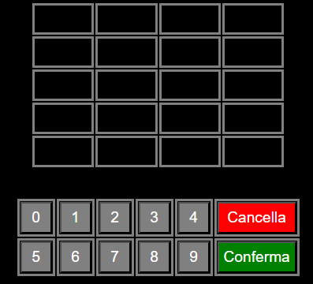
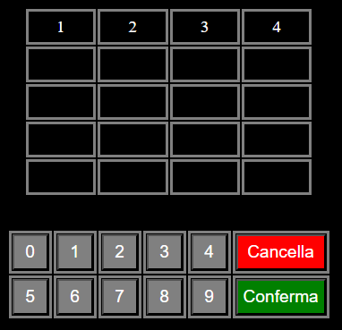
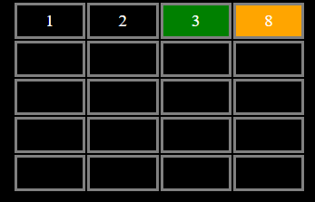
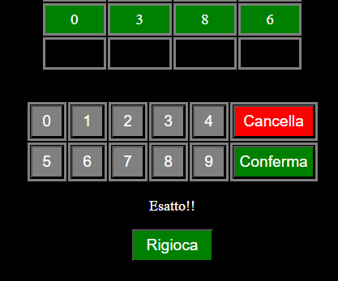
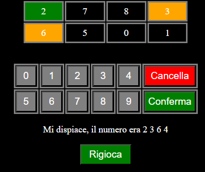
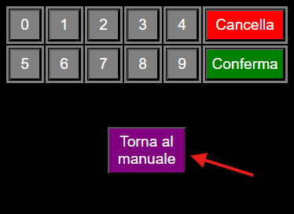

Come si gioca?
Lo scopo di questo gioco è quello di indovinare la sequenza
di numeri generata in maniera casuale dal gioco.

Questa è la tabella che devi usare per fare i tuoi tentativi.
Hai a disposizione 5 tentativi, quante sono le righe della
tabella. La tastiera sottostante ti permette di inserire
i numeri che vuoi.

Il tasto "Coferma" può essere premuto solo se hai completato
la riga della tabella. Se tenterai di premerlo quando non hai
ancora completato la riga, o quando hai completato più righe
alla volta, comparirà un messaggio di errore.

Una volta premuto il tasto "Conferma", alcune caselle potrebbero
colorarsi. Se una casella si colora di arancione significa che
il numero al suo interno fa parte della sequenza che devi
indovinare ma è al posto sbagliato. Quando invece una casella
si colora di verde, allora il numero al suo interno fa parte
della sequenza ed è anche al posto giusto.

Se indovinerai la sequenza (tutte le 4 le caselle saranno
colorate di verde), comparirà questo messaggio, e avrai
la possibilità di rigiocare, ovviamente con una sequenza
da indovinare diversa.

Se al termine dei 5 tentativi non avrai indovinato il
numero, ti verrà svelata la sequenza corretta. Anche
in questo caso ovviamente potrai rigiocare.

Se vorrai rileggere questo manuale potrai cliccare sul
pulsante viola al centro dello schemo "Torna al manuale".